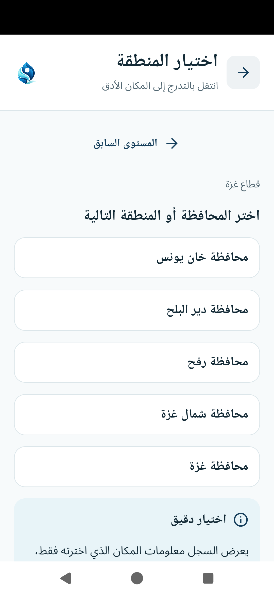

المواطن
يعرف ما هو مسجل لمنطقته، ويبلغ عن احتياج ويتابعه دون حساب.
معلومة تصل، وتنسيق يبدأ
بين ما هو مسجل من توزيعات، وما يُبلّغ عنه من احتياج، نبعنا يجعل الصورة أوضح للسكان والجهات الإنسانية.
منتج مكتمل وظيفياً، يبحث عن شريك لتجربة ميدانية، ولم يُنشر بعد للتشغيل الميداني.
قد تتفرق معلومات المواعيد والاحتياجات بين الجهات والسكان. نبعنا يجمع النشاط المسجل وإشارات الاحتياج في صورة مشتركة، لكل طرف فيها دور واضح.
يعرف ما هو مسجل لمنطقته، ويبلغ عن احتياج ويتابعه دون حساب.
تراجع الاحتياجات وتسجل خطط التوزيع مع الاطلاع على النشاط المسجل.
تتحقق من الجهات والبلاغات، وتحافظ على جودة المناطق والمعلومات.
ابدأ بالمكان. اعرف ما هو مسجل، ثم اختر الخطوة التي تحتاجها. بدون تسجيل دخول.

المواعيد القادمة وآخر نشاط مسجل يساعدان على فهم تاريخ المنطقة، دون ادعاء معرفة كل ما يحدث ميدانياً. شاهد سجل التوزيعات الفعلي
كل الصور من محاكي Android. السجلات والأعداد والجهات الظاهرة بيانات اختبار محلية، وليست نشاطاً ميدانياً.
بلاغ دون حساب، يصل إلى المراجعة. ورمز خاص لمتابعة الحالة.
إرسال البلاغ وحده لا يعني تأكيد الاحتياج أو ضمان تغطيته.
احتياجات وخطط وتاريخ مسجل في مساحة واحدة، لتنسق الجهة نشاطها انطلاقاً من معلومة أوضح.
وظائف التنسيق متاحة للجهات بعد التحقق، ووفق صلاحيات العضوية. الشاشات فعلية، والنشاط تجريبي.
البلاغ ليس تأكيداً تلقائياً للاحتياج، والتوزيع المسجل ليس ضماناً للوصول. عند تسجيل الاكتمال، يتحدث تاريخ المنطقة وحالة البلاغ المرتبط.
إرسال البلاغ ومتابعته دون تسجيل.
غياب السجل لا يعني غياب وصول المياه.
المناطق والسجلات متاحة؛ الخرائط التفاعلية مؤجلة.
رسائل وإعادة محاولة؛ لا يعمل كاملاً دون شبكة.
التجربة تحتاج جغرافيا مراجعة، HTTPS آمن، أجهزة حقيقية ودعماً محدداً. لا نشر تشغيلي أو تحقق ميداني بعد. الإطلاق الأصلي وTalkBack يحتاجان تحققاً إضافياً.
نبحث عن جهة إنسانية، مبادرة محلية أو فريق يريد تجربة نبعنا، مراجعة ملاءمته للعمل الميداني ومناقشة تبنيه أو مواصلة تطويره.
التواصل متاح بعد تحديد القناة المعتمدة.